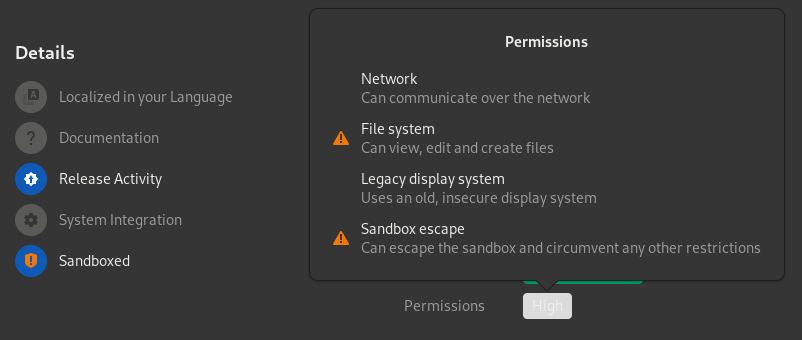

Response to flatkill.org
Table of Contents
Introduction§
Before starting this response, I’d like to give a quick introduction of myself to provide some relevant information about what I do. I maintain a few Flatpak packages that are part of Flathub. Some of the most important ones are Microsoft Edge and vkBasalt. I have also contributed to a few Flatpak packages, for example Zoom and Czkawka, and I spent a lot of time going through the Linux support channels for those who had problems with Flatpak.
Response§
“The sandbox is STILL a lie”§
Almost all popular apps on Flathub still come with
filesystem=hostorfilesystem=homepermissions, in other words, write access to the user home directory (and more) so all it takes to escape the sandbox is trivialecho download_and_execute_evil >> ~/.bashrc. That’s it.
I partially agree with this. Some directories, like ~/.local/share/flatpak/overrides, are blocked. Even if they have home or host access, they will still need explicit permissions to get read-write access to the blocked directories. Doing this with .bashrc, .zshrc and other shell configuration files would be very useful from a security standpoint to prevent sandbox escape.
However, developers are aware of this problem and are working on it; they have introduced portals. In short, portals are processes that run separately from the application to allocate data to the application only for the session, so you don’t need to access a range of permissions just to access specific data. Most GTK >=3 and Qt >=5 applications take advantage of portals.
Another thing I’d like to point out is that if you think an application has permissions that are too permissive, i.e. the application can do more than you want, you can use flatpak override or Flatseal to harden the desired application. Flatseal is a graphical permission manager for Flatpak, which is easier for the end user.
Unfortunately, the starting position on the Linux desktop was already a big problem for the following reasons:
- Debian, Fedora, Arch Linux and other Linux distributions use different package formats, different repositories and different package managers. This makes adoption of the Linux desktop more difficult, as a software developer must either package for multiple distributions or favor one distribution while ignoring the others. Flatpak fixes that issue by providing consistent builds for every distribution;
- Lack of secure standards:
- The X11 socket allows “any application granted access to your display (on an X11-based desktop, such as GNOME) [to] read and inject keystrokes […], take snapshots of the desktop or individual windows, and even move and resize windows at will.”(Source) Flatpak focuses on the development of Wayland(Source), to provide isolated windows and appropriate implementations for sharing screens, taking screenshots, etc. Over time, Flatpak will be able to provide isolated windows for the general Linux user;
- The PulseAudio socket allows “applications [to] do whatever they like to the state of user’s sound”(Source). Flatpak is also focused on the development of PipeWire, a replacement for PulseAudio that allows sound output to be isolated between applications, safe way to capture video with webcam, etc.
While punching holes in the sandbox is not the most secure implementation in the world, it is only a temporary solution. It is better than not sandboxing at all.
The most popular applications on Flathub still suffer from this - Gimp, VSCodium, PyCharm, Octave, Inkscape, Audacity, VLC are still not sandboxed.
Okay, let’s try to confirm this for ourselves. On the Flathub site, there is a category containing the 50 most popular applications. Here’s what I’m going to do: I’m going to visit these 50 applications, go to their respective repositories, read the manifest, and check either filesystem=home or filesystem=host is present.
I’ll use Spotify as an example: I open the Spotify page on Flathub, scroll down, click on View Details, click on <> Code, and click on com.Spotify.Client.json, which is the Spotify manifest. Looking at Spotify’s manifest, it does not contain filesystem=host or filesystem=home. Note that some manifests are written in YAML and therefore have the .yaml file type.
Now let’s look at the results.
If we check ourselves, 27 of the 50 application do not have access to the home or host filesystems. The remaining 23 do have access. Assuming that the author checked whether “almost all” is correct in the first place, this has since been changed, as more than half of the popular applications do not have access to the home or host filesystems. (This data was collected on February 11, 2021).
Another thing is that three of their examples, VSCodium, PyCharm, and Octave, are IDEs. It is crucial for an IDE to have access to home or host filesystems, for Git repositories, and for other external uses, otherwise it is not very useful. Two of their examples, GIMP and Inkscape, are image and vector editors respectively. They also need additional permissions to work, since making them use portals for all host system file access is technically complicated. Audacity and VLC face similar barriers, but all these applications should eventually be able to use portals instead of direct home or host filesystem access without losing functionality.
Although 23 of the applications have home or host access, GIMP, Pinta, Inkscape, VLC, Shotcut, Pitivi, Kdenlive and Blender are media creation tools; they need the permissions to work on external devices, Git repositories, etc. GNOME Boxes needs them for shared folders. Fedora Media Writer needs them to write to external devices. WPS Office, OnlyOffice and LibreOffice are office suites; they need the permissions to be useful… Many of these applications have valid reasons for needing these permissions. Without them, they are not very useful, at best.
And, indeed, users are still mislead by the reassuring blue “sandboxed” icon. Two years is not enough to add a warning that an application is not sandboxed if it comes with dangerous permissions (like full access to your home directory)? Seriously?
I partially disagree with this. Technically speaking, applications are always sandboxed, as the Flatpak developers have stated. Allowing access to the host file system does not give the application full reign over your system. An example of this is the /proc directory, the directory storing information about processes running in the background. Allowing an application to access the host’s file system will still not allow it to know what processes are running in the background. In addition, the application will still not have access to D-Bus interfaces unless they are permitted, such as org.gnome.Shell.Screenshot, and many others.
Fortunately, this problem has been solved in recent updates. If this problem persisted, I would have criticized it too:

GNOME Software displaying the following permissions in order: Network, ⚠️ File System, Legacy display system, ⚠️ Sandbox escape.
“Flatpak apps and runtimes STILL contain long known security holes”§
It took me about 20 minutes to find the first vulnerability in a Flathub application with full host access and I didn’t even bother to use a vulnerability scanner.
A perfect example is CVE-2019-17498 with public exploit available for some 8 months. The first app on Flathub I find to use libssh2 library is Gitg and, indeed, it does ship with unpatched libssh2.
Most, if not all, distributions that ship with libssh2 do not patch libssh2 as well. An example of such distribution is Arch Linux. Further, if this was a very big deal, the libssh2 maintainers would have released a new version with the patch immediately. Despite being a very active project, they still haven’t released a new update with the fix as of writing this response. Correction: I want to apologize for spreading misinformation. Some of the most used Linux distributions, such as openSUSE, Debian, Gentoo, recent Ubuntu releases and Fedora, and recently Arch Linux come with patched libssh2 builds.
A few months ago, I submitted an issue in the Gitg issue tracker. The maintainer replied to me: “Reviewing ssh feature, it is not even touched on gitg or libgit2-glib, just a dependency on libgit2, […]“.(Source)
Although it comes with an unpatched libssh2, Gitg does not use the part that contains the vulnerability.
Recently I stumbled upon an article from 2011 which started what is today known as flatpak, in the words of the project founder:
“Another problem is with security (or bugfix) updates in bundled libraries. With bundled libraries its much harder to upgrade a single library, as you need to find and upgrade each app that uses it. Better tooling and upgrader support can lessen the impact of this, but not completely eliminate it.”
After reading that it comes as no surprise flatpak still suffers from the same security issues as 2 years ago because flatpak developers knew about these problems from the beginning.
A valid point. Since the Flatpak developers were fully aware of this problem, they came up with an acceptable and easy solution: flatpak-external-data-checker (f-e-d-c). f-e-d-c is a tool that automatically checks for external sources, such as dependencies and binaries. When an update is found, flathubbot automatically submits a merge request. Here are some concrete examples: [1] [2].
Conclusion§
It is impossible to fix every issue and make all desired changes at once. What is a priority is a matter of perspective and their respective threat model. It’s literally impossible to have an issue-free/bug-free/security-hole free program. It’s not enough to point out an issue, what matters is whether that issue is more important to solve quick compared to others or whether it’s worth solving it at all.
A lot of flatkill.org’s statements are made to incite fear in the Linux community. Given that all Flatpak packages are available and able to be edited by anyone, the appropriate response is to educate on why this is a problem, and then fix it. The way that flatkill.org approached this issue says a lot.
If you don’t like Flatpak for personal reasons, I respect your opinion, but basing your arguments on an anonymous post that claims to have “criticized” Flatpak, but provided no statistics or evidence that vulnerabilities have been exploited inside a Flatpak package is not a reliable source of information.
- Initial writeup — (2021-02-11)
- Edit 1: Improve tone and quality of sentences (credit to Kellegram and Poäng) — (2021-02-12)
- Edit 2: Fix typos and improve sentences — (2021-02-12)
- Edit 3: Be more realistic and agree with valid points; fix errors and improve sentences (credit to Lionir Deadman) — (2021-02-14)
- Edit 4: Mention Portals and improve sentences; remove misinformation (credit to Shipp, DeepL Translator and vidal72) — (2021-03-16)
- Edit 5: Highlight current Linux desktop problems (credit to Robert McQueen) — (2021-03-18)
- Edit 6: Improve wording to avoid misleading portals (credit to Phaedrus Leeds) — (2021-03-18)
- Edit 7: Arch Linux now patches libssh2 (credit to Outvi V and u/sa7dse) — (2021-03-22)